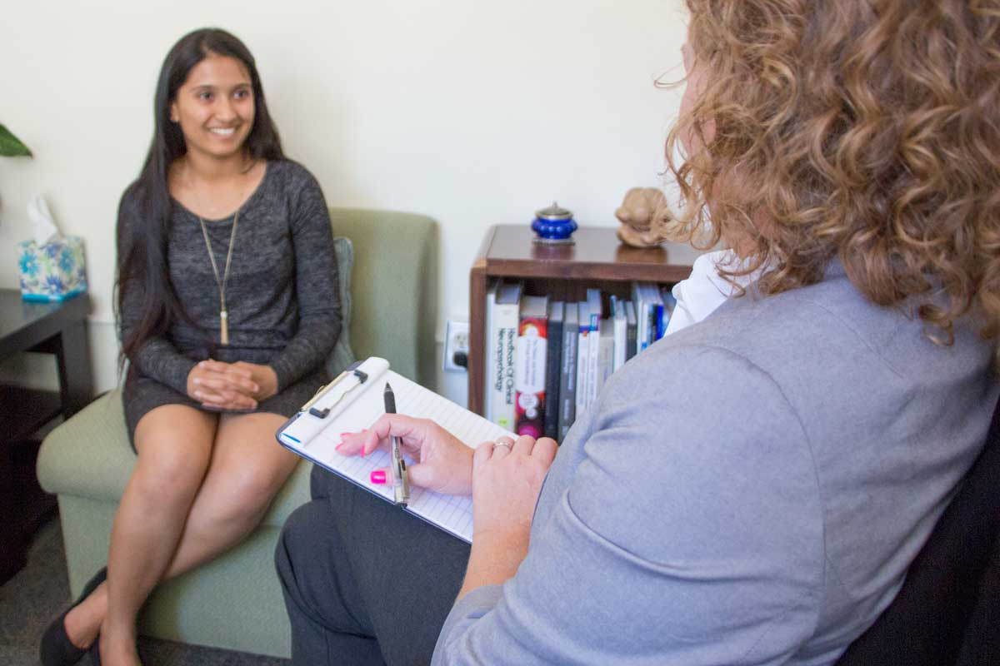
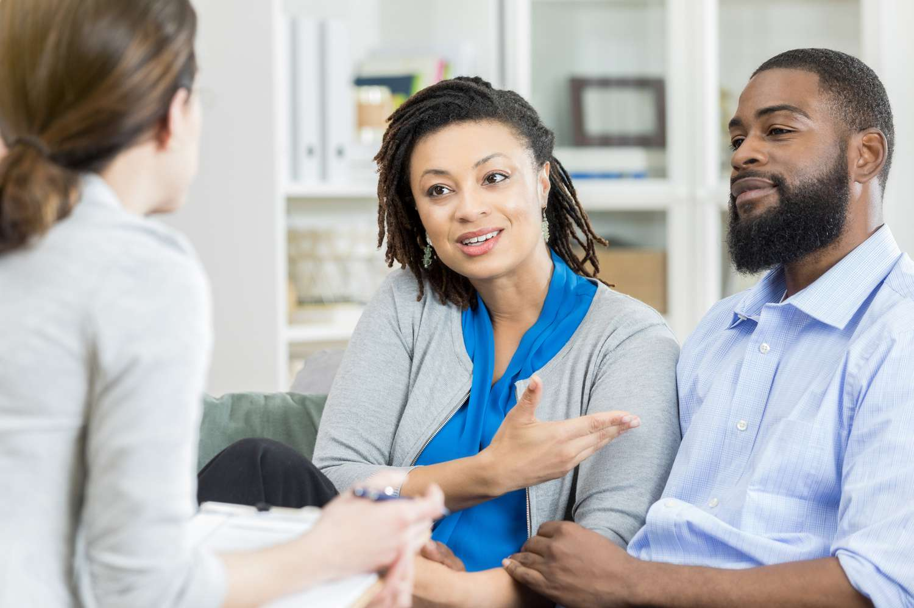

Welcome to the Counseling and Psychological Services Page
University Health & Counseling (UHC) supports the health and well-being of the campus community.
We are inspired to help students realize their potential, cope with the stresses of life, work
productively, and connect meaningfully with others.
UHC is made up of Counseling and Psychological Services (CAPS), which offers counseling
services, and University Health Service (UHS), which offers medical services. This website is
about CAPS.
CAPS is committed to creating an environment based on our values of multicultural,
multi-disciplinary and multi-theoretical practices that allow our diverse student body to access
care, receive high quality services and take positive pathways to mental health. We are happy to
offer both in-person and virtual services.
Clinical Services
Established in 1964, the Center for the Education of Women+ was a
pioneering university women’s center. Designed to serve the needs
of women students as well as women returning to school or work,
CEW+ (then known as the Center for the Continuing Education of
Women) was founded with a three-part mission of service, advocacy,
and research. The Center for the Education of Women+ (now known as
CEW+) continues its work today, serving University students, staff
and faculty, community members, and all genders, facing education,
employment, or other life issues.
Individual Counseling

Individual counseling provides an opportunity to talk with an objective, caring professional
about your concerns or problems in a brief, solution focused manner. Concerns discussed
range widely, but might include feelings of low self-esteem, anxiety, depression, academic
concerns, substance use, issues with friends and family, or relationship concerns.
Counseling sessions last 45 minutes (they start on the hour)
Relationship Counseling

Relationship counseling is available to individuals of all gender identities, sexual
orientations, and relationship orientations. This may include: couple or dyads, polyamorous
relationships and polycule groups, nonmonogamous relationships, or additional
non-heteronormative and non-dyadic relationships. Only one individual in the relationship
needs to be an enrolled UM student.
Outreach & Community Engagement
CAPS Community Engagement and Outreach is multi-faceted and comprehensive. Simply, it's a way to
reach all 46,000 of our University of Michigan students. Together, we can all change the story
about college student mental health.
What is outreach?
Outreach is about increasing college student mental health awareness through prevention,
awareness, education and stigma reduction. Through outreach, CAPS staff are able to connect
with the larger UM community and ultimately strengthen our “community of caring.”
Who do we reach through outreach?
We are essentially connecting with students who do not traditionally utilize individual or
group therapy. These could include students who may want to know more about how to help a
friend or students who may experience stigma about help seeking or students who may need
support, but not necessarily counseling. CAPS creates a “web of support” not only for
students, but also encourages staff and faculty involvement through a variety of education
and prevention efforts.